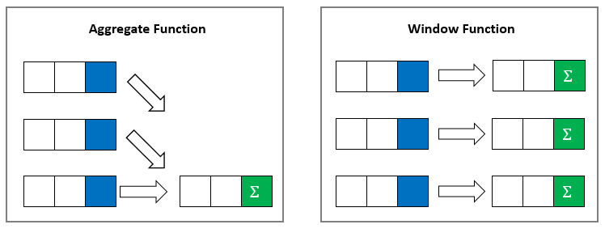
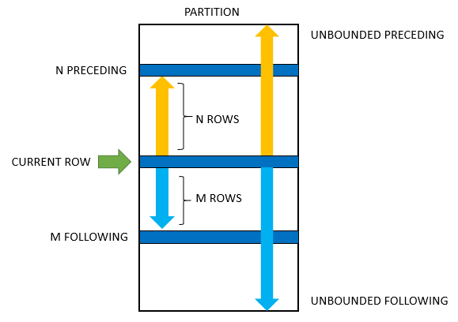

Introduction to SQL Window Functions
The aggregate functions (SUM, AVG, COUNT, MIN, MAX, etc) perform calculations across a set of rows and return a single output row.
The following query uses the AVG() aggregate function to calculate the average weight of all patients:
SELECT
AVG(weight) as avg_weight
FROM
patients;As shown, all rows are grouped into a single row. A window function does not group rows into a single row.
Using AVG() as a window function:
SELECT
first_name,
last_name,
weight,
AVG(weight) OVER() as avg_weight
FROM
patients;The OVER() clause signals that AVG() is used as a window function.

window_function_name ( expression ) OVER (
partition_clause
order_clause
frame_clause
)Clauses explanation:
Frame options:

Window function types:
The result of a window function cannot be filtered by WHERE or HAVING. Use a WITH clause to create a temporary table.
Rolling sum example:
SELECT
patient_id,
first_name,
weight,
sum(weight) over(order by patient_id) as rolling_sum
FROM patients;Incorrect filtering (does not work):
SELECT
patient_id,
first_name,
weight,
sum(weight) over(order by patient_id) as rolling_sum
FROM patients
WHERE rolling_sum < 1000;Correct filtering using WITH:
WITH rolling_sum_table AS (
SELECT
patient_id,
first_name,
weight,
sum(weight) over(order by patient_id) as rolling_sum
FROM patients
)
SELECT *
FROM rolling_sum_table
WHERE rolling_sum < 1000;